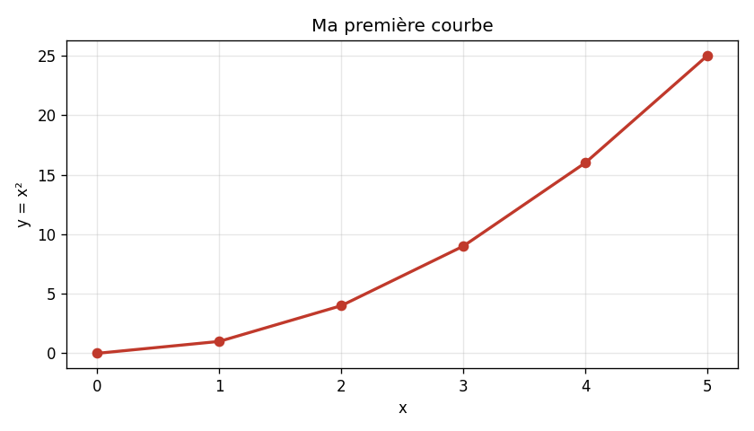
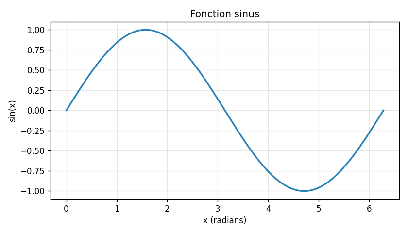
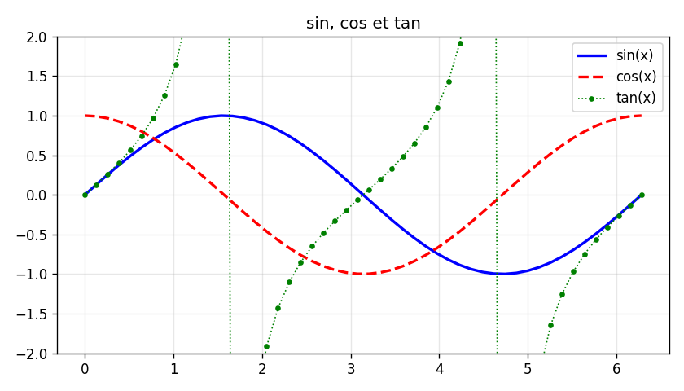
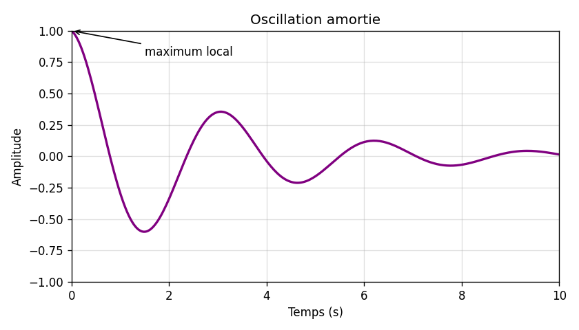
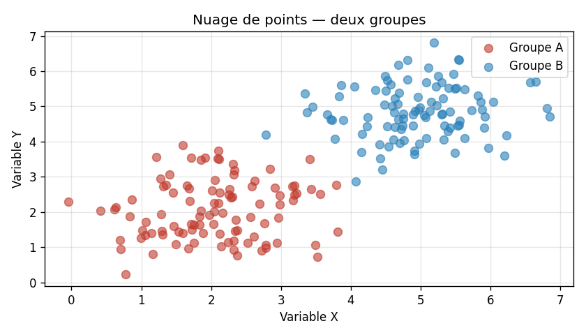

--- ## Courbes avec NumPy NumPy permet de générer facilement des tableaux de valeurs pour tracer des fonctions mathématiques continues. ```python import matplotlib.pyplot as plt import numpy as np x = np.linspace(0, 2 * np.pi, 200) y = np.sin(x) plt.plot(x, y) plt.title("Fonction sinus") plt.xlabel("x (radians)") plt.ylabel("sin(x)") plt.grid(True) plt.show() ```
--- ## Personnalisation des courbes ```python import matplotlib.pyplot as plt import numpy as np x = np.linspace(0, 2 * np.pi, 50) plt.plot(x, np.sin(x), color='blue', linestyle='-', linewidth=2, label='sin(x)') plt.plot(x, np.cos(x), color='red', linestyle='--', linewidth=2, label='cos(x)') plt.plot(x, np.tan(x), color='green', linestyle=':', linewidth=1, label='tan(x)', marker='o', markersize=3) plt.ylim(-2, 2) plt.title("sin, cos et tan") plt.legend() plt.grid(True) plt.show() ``` | Paramètre | Exemples | |---|---| | `color` | `'blue'`, `'red'`, `'#c0392b'` | | `linestyle` | `'-'`, `'--'`, `':'`, `'-.'` | | `linewidth` | `1`, `2`, `3`… | | `marker` | `'o'`, `'s'`, `'^'`, `'x'` | | `markersize` | `3`, `5`, `10`… |
--- ## Limites et annotations ```python import matplotlib.pyplot as plt import numpy as np x = np.linspace(0, 10, 300) y = np.exp(-x / 3) * np.cos(2 * x) plt.plot(x, y, color='purple', linewidth=2) plt.xlim(0, 10) # [hl] plt.ylim(-1, 1) # [hl] plt.annotate( # [hl] 'maximum local', xy=(0, 1), xytext=(1.5, 0.8), arrowprops=dict(arrowstyle='->', color='black') ) plt.title("Oscillation amortie") plt.xlabel("Temps (s)") plt.ylabel("Amplitude") plt.grid(True, alpha=0.4) plt.show() ```
--- ## Nuage de points — `scatter` ```python import matplotlib.pyplot as plt import numpy as np np.random.seed(0) n = 100 x1 = np.random.normal(2, 0.8, n) y1 = np.random.normal(2, 0.8, n) x2 = np.random.normal(5, 0.8, n) y2 = np.random.normal(5, 0.8, n) plt.scatter(x1, y1, color='#c0392b', alpha=0.6, label='Groupe A', s=50) # [hl] plt.scatter(x2, y2, color='#2980b9', alpha=0.6, label='Groupe B', s=50) # [hl] plt.title("Nuage de points — deux groupes") plt.legend() plt.grid(True, alpha=0.3) plt.show() ``` > Le paramètre `s` contrôle la taille des points, `alpha` leur transparence.
--- ## Sauvegarde d'une figure ```python import matplotlib.pyplot as plt import numpy as np x = np.linspace(0, 2 * np.pi, 200) plt.figure(figsize=(8, 4)) plt.plot(x, np.sin(x), 'b-', linewidth=2) plt.title("Sinus") plt.tight_layout() plt.savefig("mon_graphique.png", dpi=150, bbox_inches='tight') plt.show() ```plt.savefig() doit être appelé avant plt.show() — après show(), la figure est vidée.